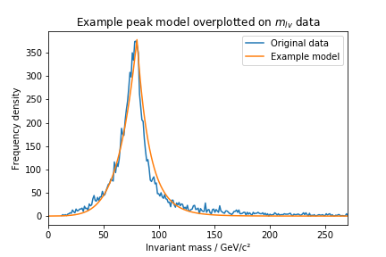

Using PyStan to identify particles produced in proton-proton collisions
The Large Hadron Collider (LHC) is a particle accelerator that is capable of producing proton beams at near light-speed. Two of these beams are targeted at eachother, so that very high-energy protons collide head-on. This collision creates many new particles, most of which are known hadrons or mesons. However, some of the created particles are heavy bosons such as the W boson, and the Higgs boson.
These bosons have a very short lifetime, limited by the uncertainty principle, and so they decay long before they can reach the particle detectors. The only way to identify the existance of these particles is to infer their presence from their decay products.
In the following example, I'll use "PyStan" to identify particles created in proton-proton collisions at LHC.
Useful imports
# numpy
import numpy as np
# pandas
import pandas as pd
# scipy
from scipy.special import ndtri
from scipy.stats import gaussian_kde
# plotting
import matplotlib.pyplot as plt
import corner
# sampler
import pystan
# misc
from time import time
Viewing the data
First, I'll use pandas to load the data. The data set is made up of 1.1 million collisions, each with 28 different attributes. The first 21 attributes are "low-level", and are only really useful for calculating the last 7 attributes. The last 7 attributes describe the invariant mass for different processes.
I'll explain further what these processes are later on, but for now I'll start by loading in the data. Since the data set is so large at 1.1 million data points, I decided to randomly sample 10000 of them, just to save some processing time.
# load data
df = pd.read_csv('HIGGS.csv',header=None)
# select only last 7 attributes
df_reduce = df[df.columns[-7:]]
# randomly choose 10000 data points
nrows = 10000
data = df_reduce.sample(nrows, random_state=2020)
For a particle A, which decays via the process into particles B and C, the invariant mass squared
is a Lorentz invariant quantity, meaning it is the same in all reference frames. This means that in the zero-momentum frame of reference, the invariant mass is just given by the mass of the particle A, .
The data set is made up of 10000 collisions, in any of which particle A may have been produced. Particle A's subsequent decay results in a a peak around , and therefore by finding the centre of the peak the invariant mass of the particle can be found. Mass is typically used to identify particles since a particle's mass is unique.
There are three attributes in particular that are of interest for us. The first is the invariant mass of the process that describes a W boson decay into a lepton neutrino pair. The peak invariant mass of this distribution should be at the W boson mass . The second attribute is the invariant mass for the process that describes a top quark decaying into a W boson and a bottom quark. The invariant mass should peak at the mass of the top quark . Finally, the third attribute is the invariant mass for the process of a Higgs decay into a bottom-antibottom meson. The invariant mass should peak at the mass of the Higgs boson .
Since we have the three invariant mass distributions, we can use them to measure the masses of the W boson, top quark, and Higgs boson. This is done by plotting a histogram of the invariant mass distributions, since the y-axis gives an idea of the relative frequency of each collision having a certain invariant mass:
hist_w = np.array(data[22]) # invariant mass for m_lv
hist_t = np.array(data[25]) # invariant mass for m_Wb
hist_h = np.array(data[26]) # invariant mass for m_bb
fig, (ax1,ax2,ax3) = plt.subplots(3,1,figsize=(10,12))
bins = 1000
# histogram predicting W boson mass
n_w,bins_w,patches_w = ax1.hist(hist_w,bins)
# histogram predicting top quark mass
n_t,bins_t,patches_t = ax2.hist(hist_t,bins)
# histogram predicting Higgs boson mass
n_h,bins_h,patches_h = ax3.hist(hist_h,bins)
ax1.set_ylabel('Frequency density')
ax1.set_title('Invariant mass $m_{lv}$ of W decay to lepton neutrino pair')
ax2.set_ylabel('Frequency density')
ax2.set_title('Invariant mass $m_{Wb}$ of top quark decay to W bottom pair')
ax3.set_ylabel('Frequency density')
ax3.set_xlabel('Invariant mass / GeV/c\u00b2')
ax3.set_title('Invariant mass $m_{bb}$ of Higgs decay to bottom antibottom pair')
plt.show()
The model
The peaks reach a sharp peak, after which they fall off with what looks like a relationship. To model this, I used a quadratic ascending limb, and a reciprocal quadratic decending limb. The model is implemented in Python with the following parameters:
def resonance(masses, h, m_in, m_max, m_fin, t_1, t_2):
"""
Function to model a particle production frequency as a function of invariant mass
:param masses: array of invariant masses
:param h: amplitude of the peak
:param m_in: initial invariant mass, at which the peak begins
:param m_max: invariant mass with coresponding maximum frequency
:param m_fin: final invariant mass, at which the peak reaches background level
:param t_1: describes the ascending limb growth rate
:param t_2: describes the descending limb decay rate
:return: array of relative frequencies of invariant masses
"""
masses = np.array(masses)
y = [0 if m < m_in else h*((m-m_in)/(m_max-m_in))**t_1 if m < m_max
else h*((m-m_max)/(m_fin-m_max) + 1)**(-t_2) if m < m_fin else 0 for m in masses]
return np.array(y)
To show what this model looks like, we can make some quick guesses of the parameters, just by looking at the peak in the distribution:
x = np.linspace(0,400,1400)
# guess at each parameter
guess_y = resonance(x, 380, -20, 80, 240, 6, 14)
plt.plot(bins_w,n_w,label='Original data')
plt.plot(x,guess_y,label='Example model')
plt.xlim(0,270)
plt.title('Example peak model overplotted on $m_{lv}$ data')
plt.xlabel('Invariant mass / GeV/c\u00b2')
plt.ylabel('Frequency density')
plt.legend()
plt.show()

The model looks like it sufficiently describes the frequency peak. The parameter that we are primarily interested in is m_max, since it predicts the most frequent invariant mass in this range; which for this example should be equal to the mass of the W boson.
Modelling with PyStan
PyStan is a Python wrapper for a C++ based sampler "Stan". To use PyStan, we first have to write a code string in C++. This code string is split into 5 blocks: functions (optional), data, parameters, transformed parameters (optional), and model.
The functions block contains user-defined functions, such as the model function defined above. The data block initialises variables such as the number of data points, the invariant masses, and their respective frequency densities. The parameters block initialises the parameters of the model. The transformed parameters block gives the expected value of the model, given the current parameters. Finally, the model block sets the priors and likelihood distrubutions.
pystan_code = """
functions {{
real resonance(real x, real h, real m_in, real m_max,
real m_fin, real t_1, real t_2)
if (x < m_in)
return 0;
else if (x < m_max && t_1 > 0)
return h*pow( (x-m_in)/(m_max-m_in), t_1 );
else if (x < m_max && t_1 < 0)
return h*pow( (x-m_in)/(m_max-m_in), 0.1 );
else if (x < m_fin)
return h*pow( (x-m_max)/(m_fin-m_max) + 1, -t_2 );
else
return 0;
}}
data {{
int<lower=0> N; // number of data points
real y[N]; // frequency densities
real m[N]; // invariant masses
}}
parameters {{
// parameters of the model
real h;
real m_in;
real m_max;
real m_fin;
real<lower=0> t_1;
real<lower=0> t_2;
real sigma;
}}
transformed parameters {{
real theta[N];
// for each invariant mass m[j], expected y-value is found
for (j in 1:N)
theta[j] = resonance(m[j],h,m_in,m_max,m_fin,t_1,t_2);
}}
model {{
// normal priors
h ~ normal({h_mu}, {h_sig});
m_in ~ normal({m_in_mu}, {m_in_sig});
m_max ~ normal({m_max_mu}, {m_max_sig});
m_fin ~ normal({m_fin_mu}, {m_fin_sig});
t_1 ~ normal({t_1_mu},{t_1_sig});
t_2 ~ normal({t_2_mu}, {t_2_sig});
// uniform parameters
sigma ~ uniform(-2, 2);
// normal likelihood
y ~ normal(theta,pow(10,sigma));
}}
"""
In the above code string, there is an extra parameter "sigma". This parameter is used to model the noise of the data. Since this values is difficult to guess, the value of sigma is set to be uniform in log-space. This means that noise standard deviation has an equal probabillity of being between an order of magnitude of -2 and 2. This is used as an alternate to using a Poisson distribution. A comparison example between this likelihood and a Poisson likelihood can be found on this site here.
Next, we need to pass information to the code string. This is done using a dictionary that contains the number of data points, frequency density, and invariant mass data points, and another dictionary that contains all the prior bounds for each parameter.
I'll start using the distribution:
data_w = {'N': len(n_w), 'y': n_w, 'm': bins_w}
priors_w = {}
priors_w['h_mu'], priors_w['h_sig'] = 380, 10
priors_w['m_in_mu'], priors_w['m_in_sig'] = -10, 5
priors_w['m_max_mu'], priors_w['m_max_sig'] = 80, 5
priors_w['m_fin_mu'], priors_w['m_fin_sig'] = 260, 10
priors_w['t_1_mu'], priors_w['t_1_sig'] = 5, 2
priors_w['t_2_mu'], priors_w['t_2_sig'] = 16, 2
Sampling the data
The code string must now be compiled using the priors dictionary defined above.
time0 = time()
model_w = pystan.StanModel(model_code=pystan_code.format(**priors_w))
time1 = time()
print("Time taken to compile model: {} seconds".format(time1-time0))
INFO:pystan:COMPILING THE C++ CODE FOR MODEL anon_model_32a27c4325414afa7499109a8951a53e NOW.
Time taken to compile model: 44.89909029006958 seconds
The sampler is now ready to iterate through the data. I'll do this using 1000 samples and 1 chain:
Nsamples = 1000
chains = 1
time0 = time()
fit_w = model_w.sampling(data=data_w, iter=Nsamples, chains=chains)
time1 = time()
print("Time taken to sample m_lv peak: " + str(time1-time0) + " seconds")
Time taken to sample m_lv peak: 1.9440805912017822 seconds
The results can be extracted from the sampler using a dictionary as follows:
la_w = fit_w.extract(permuted=True)
# posterior samples
samples_w = np.vstack((la_w['h'], la_w['m_in'], la_w['m_max'],
la_w['m_fin'], la_w['t_1'], la_w['t_2'])).T
Now that we understand how the sampling process works, we can quickly do the exact same process for the other two peaks. First, make guesses for parameter values for each data set:
# data for
data_t = {'N': len(n_t), 'y': n_t, 'm': bins_t}
data_h = {'N': len(n_h), 'y': n_h, 'm': bins_h}
priors_t = {}
priors_t['h_mu'], priors_t['h_sig'] = 110, 5
priors_t['m_in_mu'], priors_t['m_in_sig'] = 90, 5
priors_t['m_max_mu'], priors_t['m_max_sig'] = 170, 2
priors_t['m_fin_mu'], priors_t['m_fin_sig'] = 400, 10
priors_t['t_1_mu'], priors_t['t_1_sig'] = 0.7, 0.1
priors_t['t_2_mu'], priors_t['t_2_sig'] = 5, 1
priors_h = {}
priors_h['h_mu'], priors_h['h_sig'] = 120, 10
priors_h['m_in_mu'], priors_h['m_in_sig'] = 0, 5
priors_h['m_max_mu'], priors_h['m_max_sig'] = 120, 5
priors_h['m_fin_mu'], priors_h['m_fin_sig'] = 350, 10
priors_h['t_1_mu'], priors_h['t_1_sig'] = 2, 1
priors_h['t_2_mu'], priors_h['t_2_sig'] = 6, 1
Now we can sample both peaks in tandem in the exact way as before:
model_t = pystan.StanModel(model_code=pystan_code.format(**priors_t))
model_h = pystan.StanModel(model_code=pystan_code.format(**priors_h))
time0 = time()
fit_t = model_w.sampling(data=data_t, iter=Nsamples, chains=chains)
time1 = time()
fit_h = model_w.sampling(data=data_h, iter=Nsamples, chains=chains)
time2 = time()
print("Time taken to sample m_Wb peak: " + str(time1-time0) + " seconds")
print("Time taken to sample m_bb} peak: " + str(time2-time1) + " seconds")
INFO:pystan:COMPILING THE C++ CODE FOR MODEL anon_model_c8d0398ecec8d290f88238a962b61a3e NOW.
INFO:pystan:COMPILING THE C++ CODE FOR MODEL anon_model_fc7e337091261cd27b6faca01371228a NOW.
Time taken to sample m_Wb peak: 0.8660006523132324 seconds
Time taken to sample m_bb peak: 1.7904999256134032 seconds
Finally, the results can be collected again:
la_t = fit_t.extract(permuted=True)
la_h = fit_h.extract(permuted=True)
# posterior samples
samples_t = np.vstack((la_t['h'], la_t['m_in'], la_t['m_max'],
la_t['m_fin'], la_t['t_1'], la_t['t_2'])).T
samples_h = np.vstack((la_h['h'], la_h['m_in'], la_h['m_max'],
la_h['m_fin'], la_h['t_1'], la_h['t_2'])).T
Results
Now that all of the peaks have been sampled, we can check out the posterior samples returned by PyStan. We'll start by plotting a corner plot for the model, which shows the posterior distributions for each parameter, along with a contour plot describing how a parameter may vary with any other. This is done using "corner.py" and a Gaussian KDE function from scipy:
def plotposts(samples, labels, **kwargs):
fig = corner.corner(samples, labels=labels, hist_kwargs={'density': True}, **kwargs)
pos = [i*(len(labels)+1) for i in range(len(labels))]
for axidx, samps in zip(pos, samples.T):
kde = gaussian_kde(samps)
xvals = fig.axes[axidx].get_xlim()
xvals = np.linspace(xvals[0], xvals[1], 50)
fig.axes[axidx].plot(xvals, kde(xvals), color='firebrick')
labels = ['h', 'm_in', 'm_max', 'm_fin', 't_1', 't_2']
plotposts(samples_w, labels)
we're interested in only the value of m_max for each model, since it describes the mass of the particle that created the peak. We can collect the means and standard deviation errors for each parameter, along with randomly sampling from the posteriors so that we can create a posterior predictive plot.
# mean and error of parameters for m_lv distribution
means_w = [np.mean(samples_w[:,i]) for i in range(6)]
errors_w = [np.std(samples_w[:,i]) for i in range(6)]
# mean and error of parameters for m_Wb distribution
means_t = [np.mean(samples_t[:,i]) for i in range(6)]
errors_t = [np.std(samples_t[:,i]) for i in range(6)]
# mean and error of parameters for m_bb distribution
means_h = [np.mean(samples_h[:,i]) for i in range(6)]
errors_h = [np.std(samples_h[:,i]) for i in range(6)]
# number of random samples from posteriors
nfits = 300
# sample parameters for m_lv distribution
param_samples_w = [np.random.choice(samples_w[:,i],nfits) for i in range(6)]
post_samples_w = np.array(param_samples_w).T
# sample parameters for m_Wb distribution
param_samples_t = [np.random.choice(samples_t[:,i],nfits) for i in range(6)]
post_samples_t = np.array(param_samples_t).T
# sample parameters for m_bb distribution
param_samples_h = [np.random.choice(samples_h[:,i],nfits) for i in range(6)]
post_samples_h = np.array(param_samples_h).T
print("Mean Invariant Mass of m_lv peak: {} \u00b1 {} GeV/c\u00b2 \n".format(
means_w[2],errors_w[2]) +
"Mass of a W boson: 80.4 GeV/c\u00b2 \n \n" +
"Mean Invariant Mass of m_Wb peak: {} \u00b1 {} GeV/c\u00b2 \n".format(
means_t[2],errors_t[2]) +
"Mass of top quark: 173 GeV/c\u00b2 \n \n" +
"Mean Invariant Mass of m_bb peak: {} \u00b1 {} GeV/c\u00b2 \n".format(
means_h[2],errors_h[2]) +
"Mass of Higgs boson: 125 GeV/c\u00b2 \n \n")
Mean Invariant Mass of m_lv peak: 78.8824875109673 0.14962446128127846 GeV/c
Mass of a W boson: 80.4 GeV/c
Mean Invariant Mass of m_Wb peak: 170.739515663670765 2.9494226571197104 GeV/c
Mass of top quark: 173 GeV/c
Mean Invariant Mass of m_bb peak: 121.08971310473981 0.7304177489930841 GeV/c
Mass of Higgs boson: 125 GeV/c
The values for m_max make good estimates for the masses of the particles that caused the peaks. The predictions are systematically slightly lower than the true masses, which is likely due to the model I used being only a simplified approximation, instead of a more accurate model. The increased error on the estimate for the mass of the top quark is likely due to a much higher level of noise in the data.
Plotting the posterior
We can plot the posterior distributions for each peak to see the quality of the fit produced by the sampler. Below are plots for both the mean posterior (left) and the posterior predictive (right).
x = np.linspace(0,1400,1400)
fig, axs = plt.subplots(3,2,figsize=(10,12))
# m_lv peak
# mean posterior plot
axs[0,0].plot(bins_w,n_w,label='Original data')
res_y = resonance(x,*means_w)
axs[0,0].plot(x,res_y,label='Fitted model')
axs[0,0].set_xlim(0,200)
axs[0,0].set_ylabel('Frequency density')
axs[0,0].set_title('Mean posterior plots')
axs[0,0].legend(loc='upper right')
#plot posterior predictive plot
axs[0,1].plot(bins_w,n_w)
axs[0,1].set_title('Posterior predictive plots')
for i in range(nfits):
res_y = resonance(x,*post_samples_w[i])
axs[0,1].plot(x,res_y,'orange',alpha=0.02)
axs[0,1].set_xlim(0,200)
# m_Wb peak
# mean posterior plot
axs[1,0].plot(bins_t,n_t)
res_y = resonance(x,*means_t)
axs[1,0].plot(x,res_y)
axs[1,0].set_xlim(75,400)
axs[1,0].set_ylabel('Frequency density')
# posterior predictive plot
axs[1,1].plot(bins_t,n_t)
for i in range(nfits):
res_y = resonance(x,*post_samples_t[i])
if post_samples_t[i][4] > 0:
axs[1,1].plot(x,res_y,'orange',alpha=0.02)
axs[1,1].set_xlim(75,400)
# m_bb peak
# mean posterior plot
axs[2,0].plot(bins_h,n_h)
res_y = resonance(x,*means_h)
axs[2,0].plot(x,res_y)
axs[2,0].set_xlim(10,300)
axs[2,0].set_ylabel('Frequency density')
axs[2,0].set_xlabel('Invariant mass GeV/c\u00b2')
# posterior predictive plot
axs[2,1].plot(bins_h,n_h)
axs[2,1].set_xlabel('Invariant mass GeV/c\u00b2')
for i in range(nfits):
res_y = resonance(x,*post_samples_h[i])
axs[2,1].plot(x,res_y,'orange',alpha=0.02)
axs[2,1].set_xlim(10,300)
plt.show()